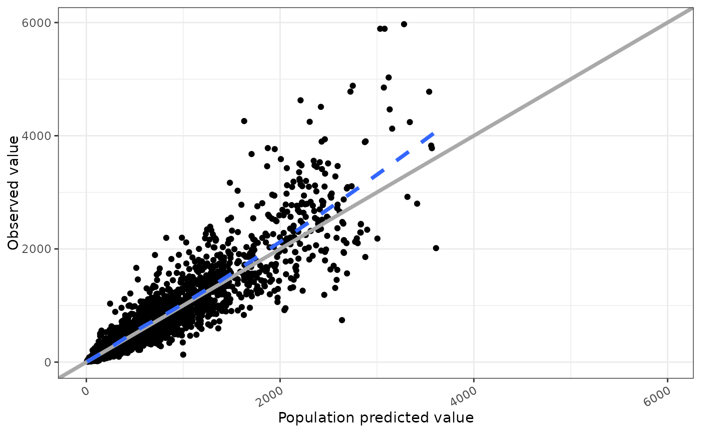

Rotate axis text
rot_x(angle = 30, hjust = 1, vjust = NULL, vertical = FALSE, ...)
rot_y(angle = 30, hjust = 1, vjust = NULL, vertical = FALSE, ...)passed to ggplot2::element_text().
passed to ggplot2::element_text().
passed to ggplot2::element_text().
if TRUE, then x-axis tick labels are rotated 90 degrees
with vjust set to 0.5 and hjust set to 1; when using rot_y(),
y-axis tick labels are rotated 90 degrees with hjust set to 0.5
with vjust set to 1; see details.
passed to ggplot2::element_text().
If x-axis tick labels do not have enough space, consider using
vertical = TRUE. By default, the tick labels will be justified up to the
x-axis line. Use hjust = "bottom" (with vertical = TRUE)
to justify the axis labels toward the bottom margin of the plot. Similar
behavior can be made for y-axis tick labels, but use vertical = TRUE and
set vjust to either "left" or "right" to control proximity to the y-axis.
data <- pmplots_data_obs()
dv_pred(data) + rot_x()
#> `geom_smooth()` using formula = 'y ~ x'

if (FALSE) { # \dontrun{
cwres_cat(data, x = "CPc") + rot_x(vertical = TRUE)
cwres_cat(data, x = "CPc") + rot_x(vertical = TRUE, hjust = "bottom")
cwres_cat(data, x = "CPc") + rot_y(vertical = TRUE)
cwres_cat(data, x = "CPc") + rot_y(vertical = TRUE, vjust = "left")
} # }